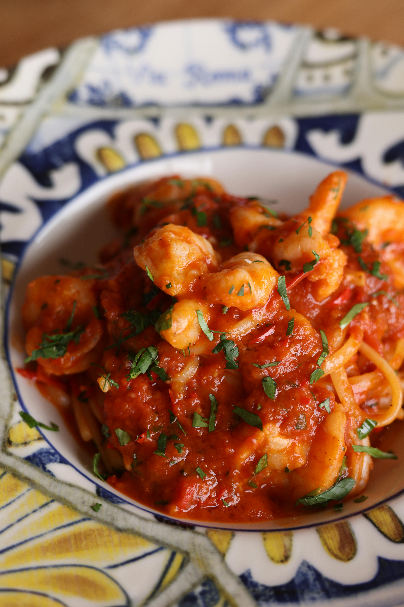

Marinara Sauce

Yield: 4 cups
Simple, hearty, and full of old-world charm, this marinara sauce is a true comfort classic. Made with ripe tomatoes, garlic, olive oil, and a touch of herbs, it simmers into something far greater than the sum of its parts. Whether you’re stirring it into a bubbling pot of pasta or spooning it over homemade pizza, this sauce brings warmth and homemade goodness to every bite. It’s the kind of recipe that fills your kitchen with the smell of love - and maybe a little garlic, too!
Ingredients
- 1 (28 oz) can whole peeled San Marzano plum tomatoes in puree
- 3 tbsp extra-virgin olive oil
- 1 small yellow onion, finely chopped
- Kosher salt
- 3 garlic cloves, minced
- 1 (15 oz) can crushed tomatoes
- 1/4 tsp red pepper flakes
- 3/4 tsp dried oregano
- 1 bay leaf
- 1/3 cup lightly packed fresh basil leaves
Special Equipment Needed
Steps
- Crush the Tomatoes: Pour the plum tomatoes (with their puree) into a large bowl. Using clean hands, gently crush them into bite-size pieces. Set aside.
- Start the Sauce Base: In a small Dutch oven or heavy-bottomed pot over medium heat, warm the olive oil. Add the chopped onion and a pinch of salt. Cook, stirring occasionally, until the onion is soft and translucent, about 10–12 minutes. Add the garlic and cook for 1–2 minutes more, stirring constantly, until fragrant and just softened.
- Simmer to Perfection: Partially cover the pot with a lid and continue to simmer the sauce over low heat for about 1 hour, stirring occasionally, until it’s thickened and reduced by roughly one-third.
- Finish and Store! Remove the bay leaf and stir in the fresh basil until just wilted. Taste and adjust seasoning as needed. Use the sauce right away, or let it cool completely before transferring to an airtight container. Store in the fridge for up to 5 days, or freeze for up to 6 months.
Home